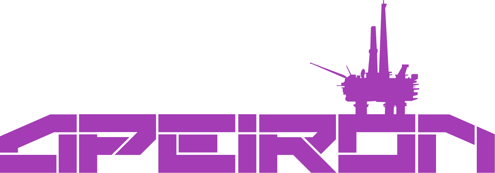
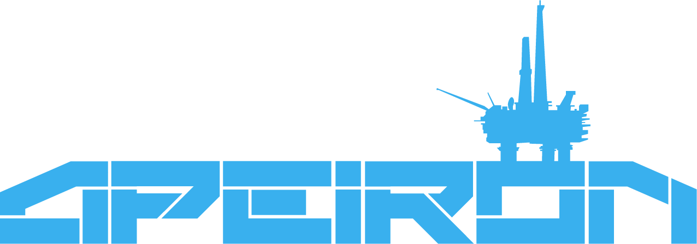
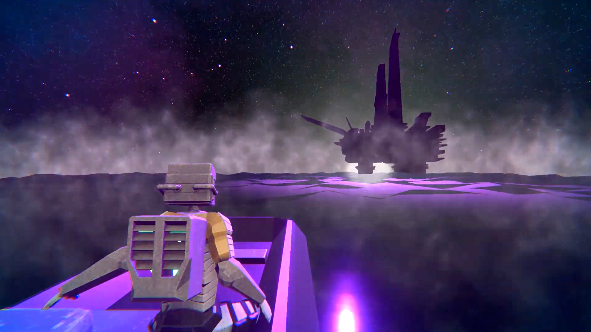
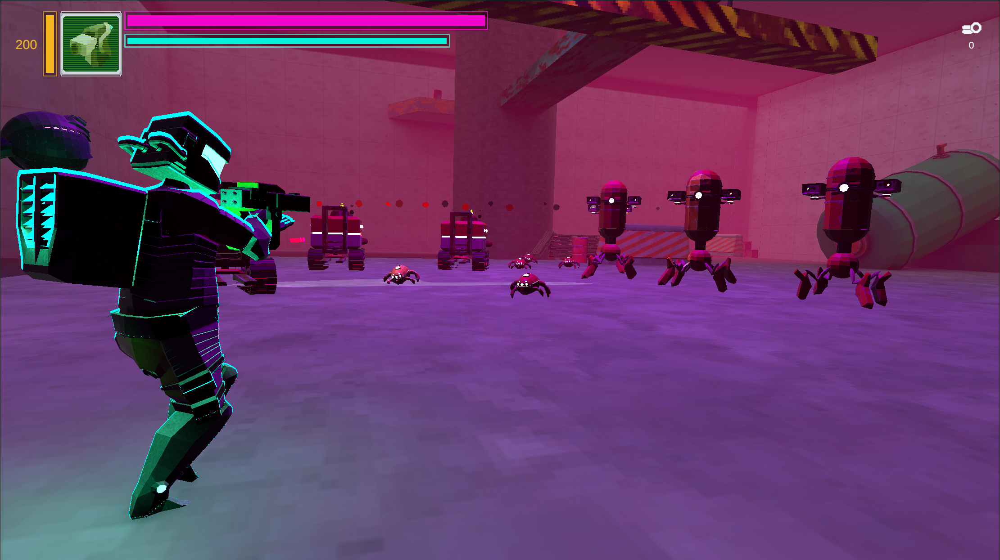
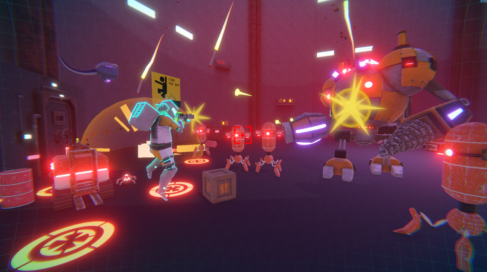
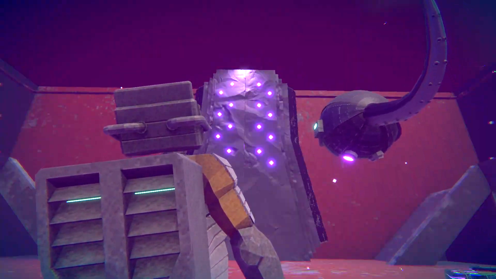
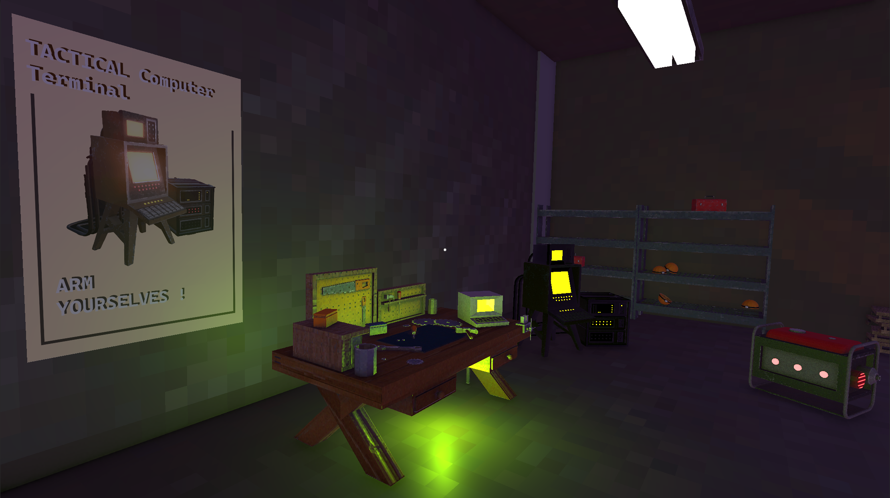
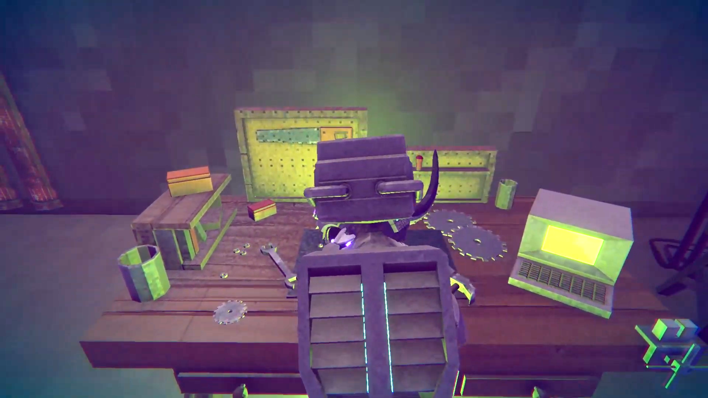

Combate en Arenas
Enfrenta oleadas de enemigos en salas cerradas. Cada encuentro es una prueba sin segundas oportunidades que exige reflejos y adaptación.
Double Mark presenta


Desciende, Mejora, Muere
Un shooter en tercera persona con combates en arenas, ambientado en una plataforma petrolera abandonada. Enfrenta máquinas olvidadas, horrores cósmicos y descubre los oscuros secretos del gobierno.
Asumes el rol de un ingeniero contratado por el gobierno para investigar una plataforma petrolera abandonada cerca de la isla Miyake. Lo que comienza como una simple misión de reconocimiento se convierte en una pesadilla llena de máquinas olvidadas, horrores cósmicos y engaños.
Tu único aliado: un compañero robótico con una personalidad carismática y un pasado borroso que guarda más secretos de los que revela.

[ SCREENSHOT ]Acción intensa combinada con progresión y personalización
Enfrenta oleadas de enemigos en salas cerradas. Cada encuentro es una prueba sin segundas oportunidades que exige reflejos y adaptación.
Las mejoras cambian tu estilo de juego, no son simples aumentos de estadísticas. Modifica cadencia, daño, alcance y efectos únicos.
Un aliado con personalidad propia, humor negro y habilidades especiales que podrás activar en momentos críticos.
Descubre la historia a través de documentos, grabaciones y detalles visuales. La verdad se esconde en cada rincón.
Cada nivel representa una etapa hacia la verdad oculta
Maquinaria abandonada, ordenadores olvidados y estructuras gigantescas. Introducción al combate y primeros secretos. El silencio se rompe solo por sonidos mecánicos antiguos.

[ ZONA INDUSTRIAL ]Instalaciones científicas derruidas, cristales rotos, tanques de contención. Aquí descubres la verdad: el Aether, los experimentos y los ingenieros anteriores.

[ LABORATORIO ]Arquitectura antinatural, símbolos arcanos, biotecnología alienígena fusionada con robots. El clímax narrativo y enfrentamiento con el guardián corrompido.

[ RUINAS ]Tres destinos entrelazados en un ciclo sin fin

[ INGENIERO ]Enviado por el gobierno sin conocer el peligro real. Silencioso, eficiente y práctico. Solo quiere sobrevivir.

[ COMPAÑERO ]Carismático y entrañable. Guarda secretos del pasado y es tu único aliado real.
Sistema de combate rápido, preciso y letal diseñado para PC con teclado y mouse.
Síguenos para conocer las novedades del desarrollo y ser el primero en jugar APEIRON.
Lee el GDD →